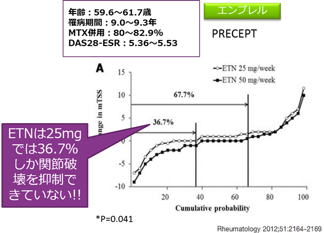
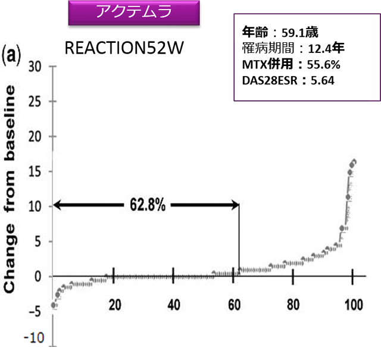

エンブレル25mgを好んで使うDrには、『ACTは骨・関節破壊抑制において、費用・効果に優れる』ことを伝える


表タイトル
| 骨・関節破壊抑制効果 費用 |
ACT 62.8% vs ENB25mg 36.7% ACT 39,291円 vs ENB25mg 31,888円 (SC) |
|---|---|
| 骨・関節破壊抑制効果 費用 |
ACT 62.8% vs ENB50mg 67.7% ACT 39291円 vs ENB50mg 62,304円 (SC) |
| 2週間で試算（2016年薬価） |
ENB25㎎はいくら安いと言っても、関節破壊の進展を十分に抑制できない